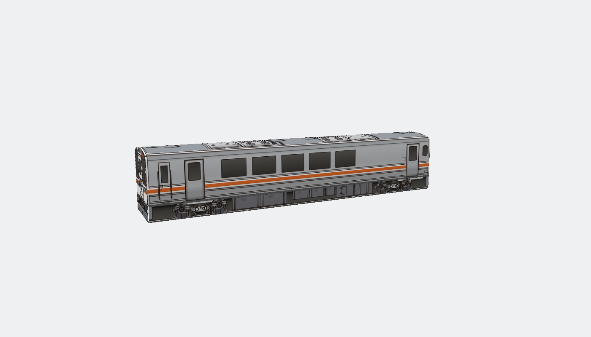
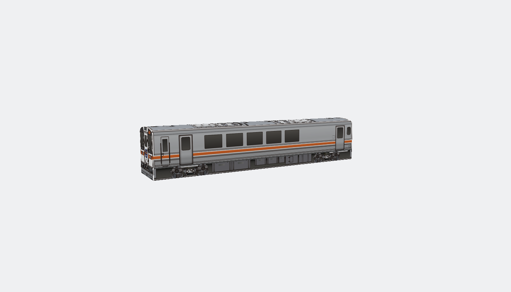
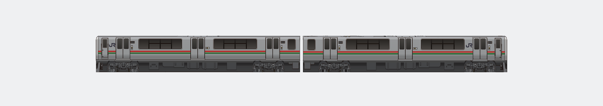
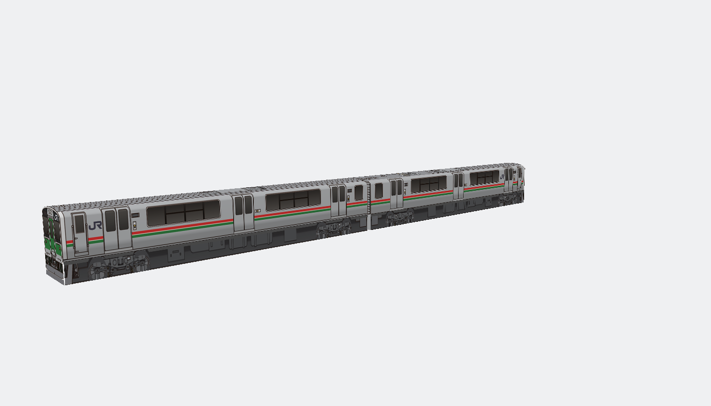
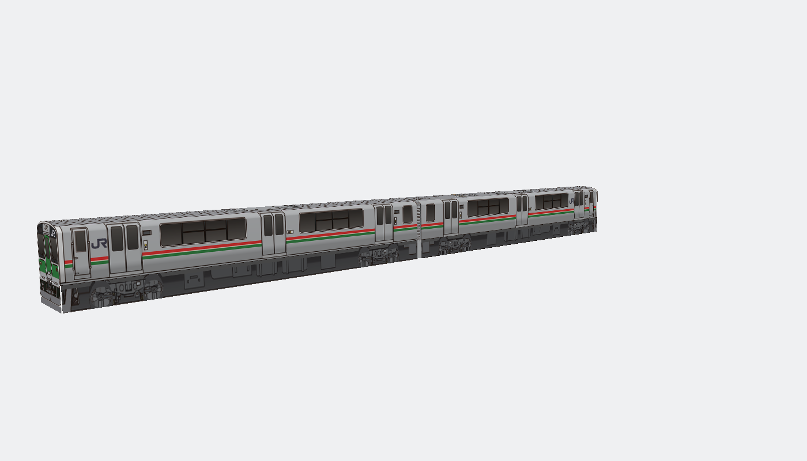
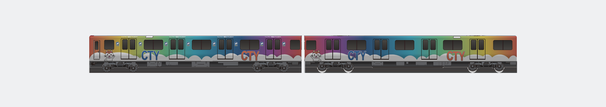
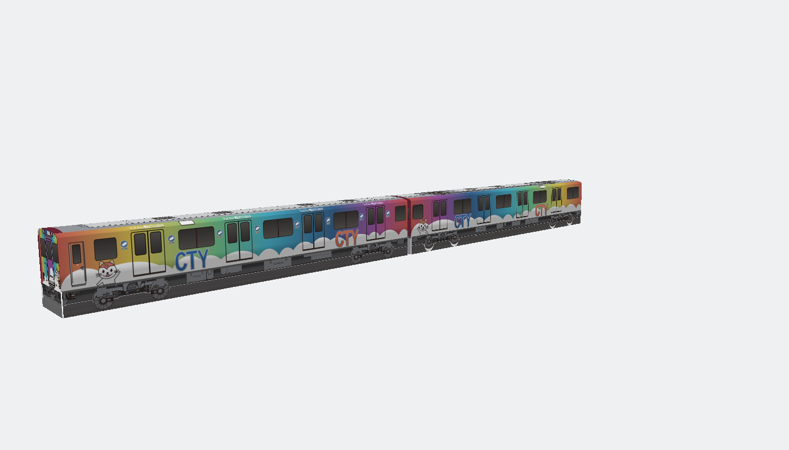
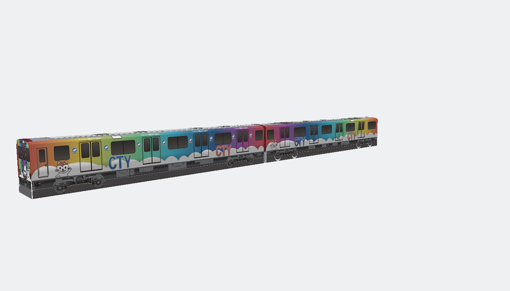

1. JR東海キハ11形300番台 jr-tokai-kiha11
编组：1 辆 · 运行线：城北線（tkj城北線，现无 key） · 未映射（本批 3 辆全部 unmapped 推）
提交：01502fb（models-pipeline 分支）
单辆 [キハ11-301]，300番台 301 式、腰部橙带。城北線现役只有 301・302；200番台已退役转让、100番台跑名松線。Y_TOP=3.60 m（非刊载 4,095 mm，见 REPORT §3 论证）；车顶沿锈痕未画（非涂装带）。


2. JR東日本701系1000番台 jr-east-701
编组：2 辆 · 运行线：東北本線東北地区 + 田沢湖線（现无 key） · 未映射（本批 3 辆全部 unmapped 推）
提交：45c6d48（models-pipeline 分支）
2 辆 [クハ700 Tc][クモハ701 Mc]，1000番台仙台色（绿+红带）。未复制 aoimori-701（青森鉄道涂装）。2 号车 FLIP_Y180 预镜像（817 先例）。只建仙台色，盛岡色为同型变体。



3. 近鉄2000系 kintetsu-2000
编组：2 辆 · 运行线：鈴鹿線（现无 key） · 未映射（本批 3 辆全部 unmapped 推）
提交：3d8c854（models-pipeline 分支）
2 辆子集 [ク2107 + モ2007] CTY 涂装（city 图只画 2007F，缺 Mc モ2008，未臆造；car2 外端按图为贯通端）。car2 −Z 侧 "YTC" 镜像为图纸缺陷，已接受（skill 禁重画）。


